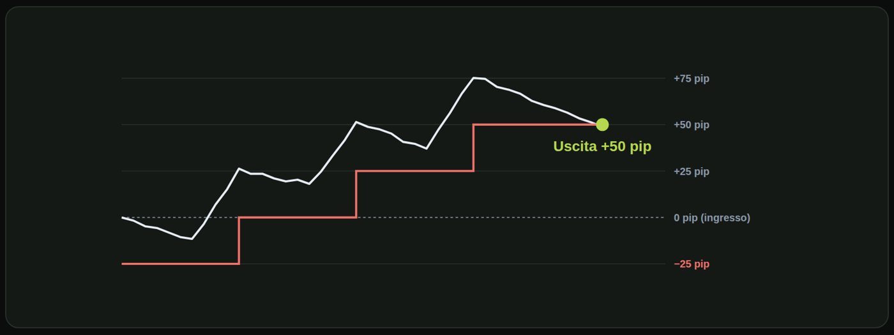
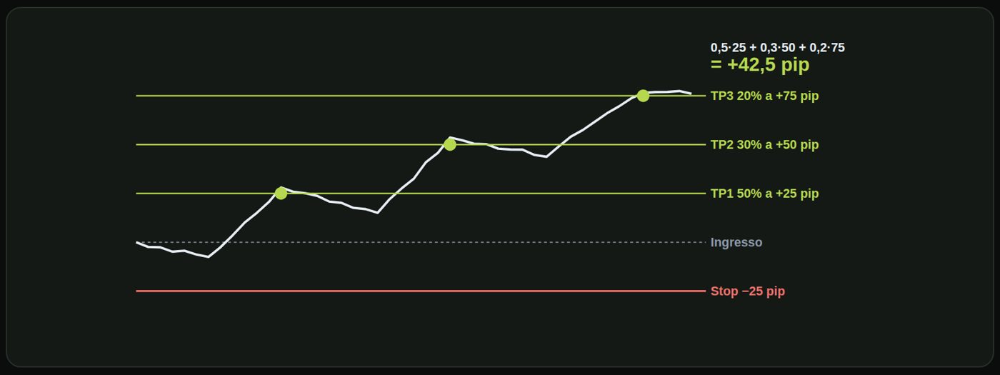
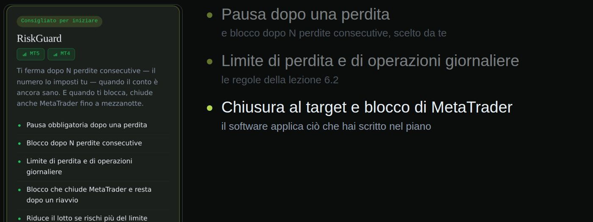

Materiale educativo, non consulenza finanziaria. Il trading con leva su forex, CFD e futures comporta un rischio elevato: puoi perdere tutto il capitale. Numeri, esempi e simulazioni non prevedono risultati futuri.
Come proteggere un trade in guadagno senza soffocarlo.
Due strumenti con due scopi. Il break-even: sposti lo stop al prezzo di ingresso, e il trade non può più perdere, spread a parte. Il trailing stop: lo stop segue il prezzo a una distanza fissa o a livelli, e blocca parte del guadagno. Nessuno dei due è gratis: proteggere troppo presto costa trade che sarebbero arrivati a target.

Vediamo un trailing a scatti su un grafico, con scatti di venticinque pip. Entri con lo stop iniziale venticinque pip sotto l'ingresso. Quando il prezzo guadagna venticinque pip, lo stop va a pareggio: il trade non può più perdere. A cinquanta pip di guadagno, lo stop sale a più venticinque: un guadagno minimo è già assicurato. A settantacinque pip, lo stop va a più cinquanta. Poi il prezzo torna indietro e scatta lo stop: esci a più cinquanta pip, senza aver dovuto indovinare il massimo.
| Perdite piene | meno |
| Trade che arrivano a target | meno |
| Pareggi | molti |
| Perdite piene | più |
| Trade che arrivano a target | più |
| Pareggi | meno |
Il compromesso è chiaro. Prendi un trade con stop a venticinque pip. Spostare il break-even presto, a dodici pip di profitto, cioè a metà dello stop, ti riduce le perdite piene, ma fa chiudere in pareggio molti trade che sarebbero arrivati a target. Spostarlo più tardi, a venticinque pip, lascia respirare il trade, ma più operazioni tornano allo stop pieno. Non esiste un valore giusto in assoluto: va testato sui tuoi dati.
Tre regole pratiche. Decidi in anticipo il livello di break-even e applicalo sempre, non a sensazione. Lascia spazio al rumore: uno stop troppo vicino al prezzo scatta per un semplice ritracciamento. E misura l'effetto di ogni regola nel journal, con almeno cento trade.
Proteggere un trade troppo presto è un altro modo di perdere.
Dividere la posizione in più parti con target diversi.
L'idea delle uscite a scaglioni. Con una sola uscita è tutto o niente: o arrivi al target, o ti ferma lo stop. Con più uscite distribuisci il risultato: incassi una parte presto e lasci correre il resto. Riduce lo stress, ma non il rischio iniziale: la perdita massima resta quella che hai deciso.

Vediamo gli scaglioni su un grafico. Entri con lo stop a venticinque pip sotto e tre target pianificati: a più venticinque, più cinquanta e più settantacinque pip. Il prezzo sale e tocca il primo: esce la metà della posizione, e incassi. Tocca il secondo: esce il trenta per cento. Tocca il terzo: esce il restante venti per cento. Il risultato finale è zero virgola cinque per venticinque, più zero virgola tre per cinquanta, più zero virgola due per settantacinque: quarantadue virgola cinque pip.
| Scaglione | Quota | Chiude a | Contributo |
|---|---|---|---|
| TP1 | 50% | +25 pip | 0,5 × 25 = 12,5 pip |
| TP2 | 30% | +50 pip | 0,3 × 50 = 15 pip |
| TP3 | 20% | +75 pip | 0,2 × 75 = 15 pip |
| Totale | 100% | 42,5 pip ≈ 170 € |
Con 0,4 lotti, 1 pip vale 4 €.
| Scenario | Risultato |
|---|---|
| Stop subito | −25 pip (−100 €) |
| TP1, poi stop a pareggio | +12,5 pip (+50 €) |
| TP1 e TP2, poi il resto esce a +25 pip | +32,5 pip (+130 €) |
| Tutti e tre i target | +42,5 pip (+170 €) |
| Incassi qualcosa presto | |
| Meno stress psicologico | |
| Resti dentro i trend lunghi |
| Guadagno massimo ridotto | |
| Più costi (più ordini) | |
| Più complessità |
Pro e contro. Incassi qualcosa presto, hai meno stress e resti dentro i trend lunghi con una parte della posizione. Il guadagno massimo è ridotto, hai più costi perché ci sono più ordini, e più complessità da gestire.
Uscire a pezzi cambia come vinci. Non quanto rischi.
La piramide: quando ha senso, e quanto rischio porta.
Piramidare significa aggiungere a una posizione che sta già andando bene. Si aggiunge solo quando il trade è in guadagno, mai per mediare una perdita. Ogni aggiunta è più piccola della precedente, così la posizione cresce ma il rischio resta sotto controllo. E lo stop si sposta per proteggere il rischio totale: senza questo accumuli esposizione.
| Aggiungi mentre perdi | |
| Rischio totale cresce | |
| Il piano è violato |
| Aggiungi mentre guadagni | |
| Rischio totale controllato | |
| Il piano lo prevede |
Non confondere le due cose. Mediare in perdita significa aggiungere mentre perdi: il rischio totale cresce e il piano è violato. Piramidare significa aggiungere mentre guadagni, con il rischio totale controllato e con una regola già scritta nel piano.
| Posizione iniziale | 0,4 lotti, stop 25 pip = rischio 100 € |
| Il prezzo sale di 25 pip | stop a pareggio: rischio 0 € |
| Aggiungi 0,2 lotti a +25 pip | con stop a 25 pip: rischio 50 € |
| Rischio totale | 50 €, non 150 € |
Regole per non farsi male. Decidi quante aggiunte al massimo: per esempio una o due, mai di più. Ogni aggiunta più piccola, altrimenti il prezzo medio si avvicina all'ingresso peggiore. E non aggiungere dopo una forte estensione: il ritracciamento è più probabile e colpisce tutta la posizione.
Aggiungi solo con i soldi del mercato, mai con i tuoi.
Lasciare a un software ciò che non vuoi decidere sotto stress.
Cosa si può automatizzare nella gestione del rischio? Il calcolo del lotto, dalla distanza dello stop e dal rischio in percentuale. I limiti giornalieri: blocco dopo una perdita o dopo un numero di perdite. Break-even e trailing, applicati con regole fisse, senza esitazioni. E le uscite a scaglioni, con ordini e target preimpostati.
Cosa non si automatizza. La decisione di entrare resta tua: gli strumenti di gestione del rischio non danno segnali. La responsabilità del piano: un software esegue le regole che gli dai, buone o cattive. E il controllo: devi verificare che stia facendo quello che vuoi.
| Strumento | Cosa fa |
|---|---|
| RiskGuard | pausa dopo una perdita, stop dopo N perdite, limite giornaliero, chiusura al target, blocco di MetaTrader |
| TradeManager | sposta lo stop a pareggio e segue il prezzo (trailing) |
| ScaleIn | divide la posizione in più take profit |
| Riskly Pro | riunisce le funzioni in un unico strumento per MT4 e MT5 |
| Journal | raccoglie le operazioni e calcola le statistiche |
Non danno segnali e non aprono operazioni. Info e prezzi su riskly.trade.

Un esempio concreto: RiskGuard, che come ti ho detto è un mio prodotto. Pausa obbligatoria dopo una perdita, e blocco dopo un numero di perdite consecutive che scegli tu. Limite di perdita e di operazioni giornaliere: sono le regole della lezione sei punto due. Chiusura al target e blocco di MetaTrader. Il software non decide per te: applica ciò che hai scritto nel piano.
| Costo zero | |
| Serve disciplina costante | |
| Errori nei momenti di stress |
| Ha un costo | |
| Regole applicate sempre | |
| Va configurato e controllato |
Software o fatto a mano? A mano non costa nulla, ma richiede disciplina costante e gli errori arrivano nei momenti di stress. Con un software hai un costo, ma le regole vengono applicate sempre. Va però configurato e controllato. Non è obbligatorio: puoi applicare tutto quello che hai imparato anche con un foglio di calcolo e molta disciplina. Gli strumenti servono a chi vuole togliersi la decisione di mezzo.
Il miglior strumento è quello che ti impedisce di fare ciò che sai di non dover fare.
Prova a risolverli senza guardare: le soluzioni sono nella pagina successiva.
| Ingresso | 1,2000 |
| Stop iniziale | 1,1960 (40 pip) |
| Prezzo attuale | 1,2080 (+80 pip) |
| Domanda | dove va lo stop con trailing a scatti di 40 pip? |
| Stop | 30 pip |
| Scaglione 1 | 60% a +30 pip |
| Scaglione 2 | 40% a +75 pip |
| Posizione 1 | 0,4 lotti, stop a pareggio |
| Aggiunta | 0,2 lotti, stop a 25 pip |
| Valore pip | 10 € per lotto |
| Il tuo punto debole | dopo 2 perdite apri trade fuori piano |
| Domanda | quale regola automatizzeresti? |
| Prezzo a +80 pip | stop a +40 pip |
| Livello dello stop | 1,2000 + 0,0040 = 1,2040 |
A ottanta pip di guadagno, lo stop va a quaranta pip di guadagno: ingresso più quaranta pip, cioè uno virgola due zero quattro zero.
| Scaglione 1 | 0,6 × 30 = 18 pip |
| Scaglione 2 | 0,4 × 75 = 30 pip |
| Totale | 48 pip |
Zero virgola sei per trenta: diciotto pip. Zero virgola quattro per settantacinque: trenta pip. Totale quarantotto pip.
| Rischio aggiunta | 0,2 × 25 × 10 = 50 € |
| Rischio posizione 1 | 0 € |
| Totale | 50 € |
Zero virgola due per venticinque per dieci: cinquanta euro. La prima posizione, a pareggio, non rischia più. Totale cinquanta euro.
| Regola | stop dopo 2–3 perdite di fila |
| Come | blocco automatico o pausa obbligatoria |
Uno stop automatico dopo due o tre perdite di fila, con un blocco o una pausa obbligatoria. Automatizza il tuo punto debole, non tutto.
Spunta ogni punto solo se sapresti spiegarlo a voce a un altro trader.
Materiale educativo, non consulenza finanziaria. Il trading con leva su forex, CFD e futures comporta un rischio elevato: puoi perdere tutto il capitale. Numeri, esempi e simulazioni non prevedono risultati futuri. · riskly.trade